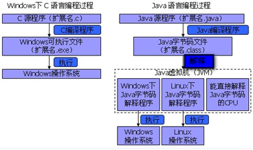
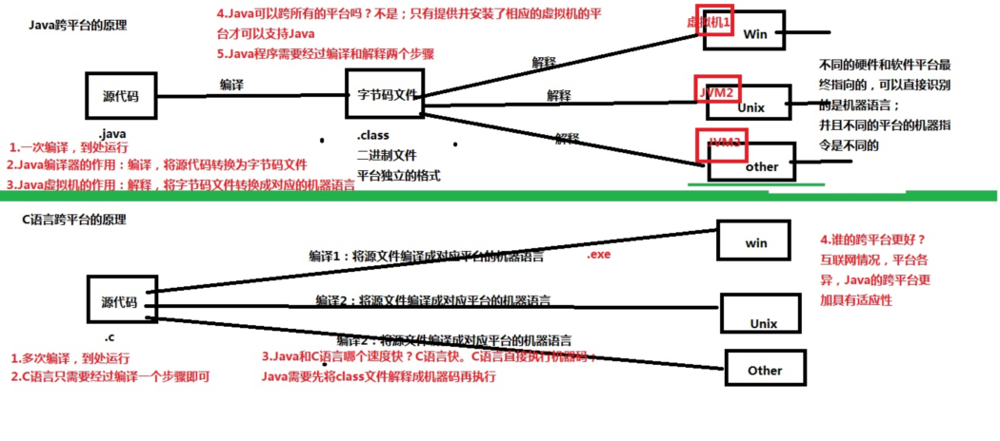
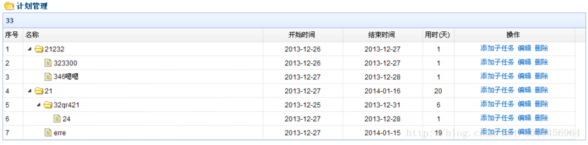
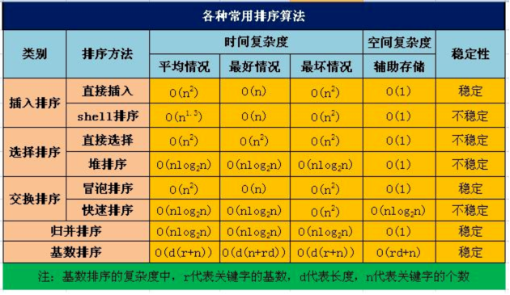

1.Java跨平台原理（字节码文件、虚拟机）


1) C/C++语言都直接编译成针对特定平台机器码。如果要跨平台，需要使用相应的编译器重新编译。
2) Java源程序（.java）要先编译成与平台无关的字节码文件(.class)，然后字节码文件再解释成机器码运行。解释是通过Java虚拟机来执行的。
3) 字节码文件不面向任何具体平台，只面向虚拟机。
4) Java虚拟机是可运行Java字节码文件的虚拟计算机。不同平台的虚拟机是不同的，但它们都提供了相同的接口。
5) Java语言具有一次编译，到处运行的特点。就是说编译后的.class可以跨平台运行，前提是该平台具有相应的Java虚拟机。但是性能比C/C++要低。
6) Java的跨平台原理决定了其性能没有C/C++高
2.&和&&的区别和联系，|和|的区别和联系
&和&&的联系(共同点)：
&和&&都可以用作逻辑与运算符，但是要看使用时的具体条件来决定。
操作数1&操作数2，操作数1&&操作数2， 表达式1&表达式2，表达式1&&表达式2， |
情况1：当上述的操作数是boolean类型变量时，&和&&都可以用作逻辑与运算符。
情况2：当上述的表达式结果是boolean类型变量时，&和&&都可以用作逻辑与运算符。
表示逻辑与(and)，当运算符两边的表达式的结果或操作数都为true时，整个运算结果才为true，否则，只要有一方为false，结果都为false。
&和&&的区别(不同点)：
(1)、&逻辑运算符称为逻辑与运算符，&&逻辑运算符称为短路与运算符，也可叫逻辑与运算符。
对于&：无论任何情况，&两边的操作数或表达式都会参与计算。
对于&&：当&&左边的操作数为false或左边表达式结果为false时，&&右边的操作数或表达式将不参与计算，此时最终结果都为false。
综上所述，如果逻辑与运算的第一个操作数是false或第一个表达式的结果为false时，对于第二个操作数或表达式是否进行运算，对最终的结果没有影响，结果肯定是false。推介平时多使用&&，因为它效率更高些。
、&还可以用作位运算符。当&两边操作数或两边表达式的结果不是boolean类型时，&用于按位与运算符的操作。
|和||的区别和联系与&和&&的区别和联系类似
3.switch条件变量的取值类型
byte short int 及其包装类
char及其包装类
不可以是long 及其包装类
不可以是布尔 及其包装类
不可以是float、double 及其包装类
可以是String吗？JDK1.7之前不可以，之后（包含1.7）可以
可以是枚举吗？JDK1.5之前不可以，之后（包含1.5）可以
4.递归
1.二叉树的定义和遍历
2.遍历图
3.某些查找算法，比如折半查找、二叉查找树
4.某些排序算法，比如归并和快速排序
5.复制/删除文件夹（包括子文件夹），而不是复制/删除文件；dir /s 而不是 dir
6.字符全排列、字符回文、汉诺塔
7.动态生成树形结构的菜单来实现数据的管理；或者是需要动态生成树形的图表结构。这些树形结构往往没有层级限制

5.冒泡排序、插入排序、选择排序、快速排序的的算法思路和实现代码
查看之前讲解的四种排序的的代码和视频，此处不再重复
强调：

1.直接插入排序、简单选择排序、冒泡排序是最简单的三种排序算法，时间复杂度也最高O（n2），作为基础排序，面试中有被问到，三种都要掌握。
2.三种简单排序算法简单，但是效率低下；高级排序在简单排序基础上优化，算法复杂，换取的是性能提高，同时可能需要更多的辅助空间。
3.快速排序和归并排序都使用了分治和递归，所以面试时被问到的机会比较高，尤其是快速排序。
4.从时间性能上看，快速排序是所有排序算法中实际性能最好的，然而快速排序在最坏情况下（数据基本有序）的时间性能不如堆排序和归并排序，
并且空间复杂度高，所以更适合数据不大的情况。
5.基于比较的排序的时间复杂度下限是 Ω(nlogn)，即这已经是最高的效率了。
6.如果在面试中有面试官要求你写一个O(n)时间复杂度的排序算法，你千万不要立刻说：这不可能！
使用非比较的排序(计数排序、基数排序)可以达到线性时间O（n）复杂度的排序，
只不过有前提条件，就是待排序的数要满足一定的范围的整数，而且可能需要较多辅助空间。
7.需要结合具体的需求和场景来选择甚至组合使用。才能达到高效稳定的目的。没有最好的排序，只有最适合的排序。